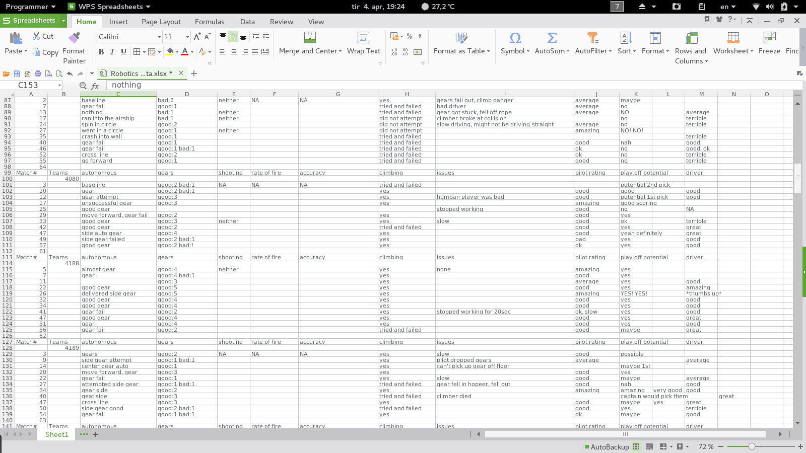

Oftentimes a team’s ranking at the end of the qualifications does not fully represent their abilities. This is why scouting is so important. We have created scouting sheets for our scouting team members to fill out during each match. At the end of the qualifiers, we use the collected data to calculate the most promising team’s statistics so we are prepared to make good alliance picks.
After looking through the game manual, we start creating scouting sheets based on what we find to be important. Members also begin communicating with representatives of other teams online.
Competitions are our crunch time. We create an assembly line in the stands and work as quickly as possible. One member labels the sheets with team numbers and passes them down to each scouter before the match starts. Once the game begins, each scouter has to follow their assigned team and record their performance. After everyone is done writing, the papers are sent to our computer person who enters all the information into a document. This process continues until the qualifiers are finished. At that point, we calculate the most promising teams' statistics and send them to our alliance selector.
During this time, we compile all collected data and make calculations for future use and make adjustments to the way we input data so that we are prepared for the next competition. We also edit the information on our scouting sheets to better reflect what we feel is important. Another job of ours is to keep up with other competitions. Watching other competitions helps us gather more information and learn from other teams' strategies.
The scouting captain is the leader of the scouting team. Their job is to create scouting sheets and software, make scouting alliances, and divide responsibilities among members.
Landon is known around the FRC community as "that ginger kid." He spends a lot of time promoting the team and managing our contacts. His almost encyclopedic knowledge of FIRST has led us to many victories and a better understanding of the game.
The Lead guides the scouters through the scouting process. They are in charge of sorting and labeling the scouting sheets and keeping the scouting team working efficiently.
Carol is a junior and a responsible rookie member who is always looking out for her teammates. She has a passion for golf and science and is never without food. Carol plans to attend Mercer for college.